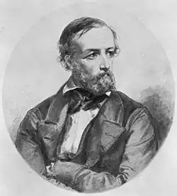
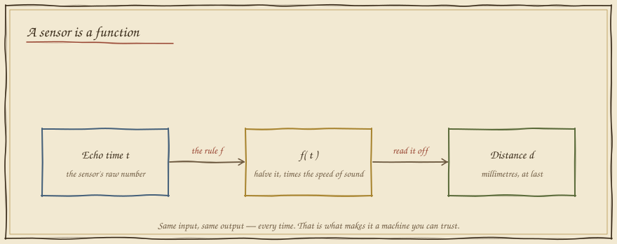
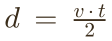
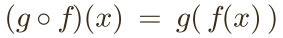

Machines as Functions
In which a sensor hands the robot a number it cannot use, and a piece of notation Euler scribbled in 1734 turns every part of the machine into something you can trust.
The box that won't explain itself
Here is the robot's distance sensor, sealed in a black box. You feed it a number — how long the ultrasonic echo took to return — and it hands one back. But the box won't tell you its rule. Probe it. Then predict what it will say to a number you haven't tried.
Notice the one thing that makes the box usable: feed it a 4 today or a 4 tomorrow, you get the same answer. One input, one output, no surprises. That reliability has a name — the box is a function — and without it, no sensor reading could ever be acted on. A part you cannot predict is a part you cannot build on.
The little notation that ate mathematics
For most of history a "function" meant a formula you could write down. Then two men widened it until it could hold any lawful rule at all — including the ones a machine computes.

y = f(x) is speaking his shorthand.

Every function is a shape
A rule you can only probe one number at a time is hard to hold in your head. So plot it: feed every input along the bottom, stack each output up the side, and the function becomes a picture you can read at a glance. Sweep the input and watch the machine draw itself.

Machines in series
A robot is never one function — it is a chain of them. The echo time enters the first machine and leaves as a distance; that distance enters the second and leaves as motor steps. Feeding one machine's output into the next is called composition, and it is how every pipeline on Earth is built. Aim the gripper at the mark by feeding the chain the right echo.

What you can now build
Every sensor driver, every calibration curve, every layer of a neural network is a function in Euler's sense and Dirichlet's — a lawful box from input to output — and every robot behaviour is those boxes composed into a chain. Master the box and the chain, and "how does the robot turn what it senses into what it does?" stops being magic. Next, in Folio 07, we meet a function so important to batteries and signals that it had to invent its own number: e.
Field exercise: take any everyday machine — a microwave's
time knob, a thermostat, a volume dial — and write its rule as
output = f(input). State its domain (which inputs are
allowed) and range (which outputs can result). You are now reading the
world as a pipeline of functions, which is precisely how a roboticist
sees it.